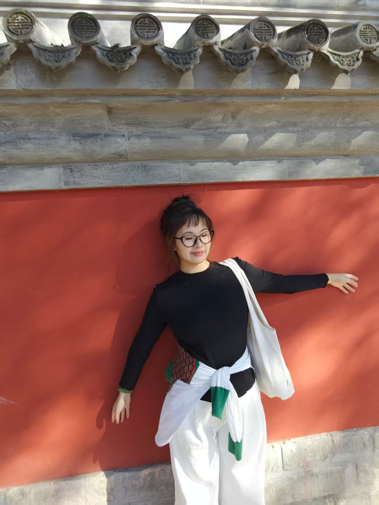

立即到岗 / 北京
刘耘彤
北京理工大学 27级设计学硕士研究生
🎯 求职意向：产品经理
“以设计思维洞察用户需求，以产品逻辑驱动商业落地。”
18835314795
yt1253835138@163.com
实习经历
B
百度 · 搜索产品经理实习
2025.09 - 2026.03
搜索结果页-功能&策略
项目一：天气民生服务一体化
核心目标：实现从“信息查询”向“服务闭环”的升级
关键数据
跳转点击率 +3.68%
核心方案
- ▶ 现状洞察：分析 90% 用户仅停首屏，渗透率不足 10%。
- ▶ 架构重构：优化天气卡层级，提升核心信息曝光。
- ▶ 场景联动：整合 11 项高频服务，构建闭环。
核心成效
满意消费率
+2.68%
关联场景 UV 增长 0.16%。
项目二：天气服务智能化
核心目标：实现从“数据呈现”向“智能决策”的跨越
交互点击率
+1.58%
核心方案
- ▶ 痛点锁定：聚焦出行/穿衣场景。
- ▶ 内容赋能：上线 7 类 AI 生活提示模块。
核心成效
+1.46%
整体点击率增长
项目三：多天天气卡体验优化
核心目标：完善服务能力 + 提升屏效
点击比例
+1.6%
核心方案
- ▶ 策略优化：针对历史查询优化召回。
- ▶ 可视化重构：设计图形化趋势模块。
核心成效
-2.0%
换Query率降低
项目经历
政府合作 / 项目管理
“共富果园”小程序设计与运营
通过“认养-体验-复购”链路解决产销断层，降低滞销率达 15%。获浙江卫视专题报道。
15%
减少滞销
VR / AR 前沿
北理工校庆沉浸式 VR 体验展
统筹 PICO 平台开发，完成校史 7 处核心场景交互设计。CCTV 央视专题报道项目。
工期缩短 50%
AIGC 流程优化
关于我
🔹 学历与荣誉
北京理工大学 · 设计学
2024.09 - 2027.06 | 硕士
荣誉：一等学业奖学金 × 2、校“优秀学生”
浙江理工大学 · 工业设计
2020.09 - 2024.06 | 本科
荣誉：实用新型专利 × 1、金奖 × 多项
🔧 个人优势与技能
- 1. 产品规划：需求 analysis + 原型 + 落地
- 2. 需求洞察：用户/业务/数据三维洞察
- 3. 沟通协同：跨职能推进项目高效落地
Figma / Axure
AIGC
SQL / Excel
English (CET-6)